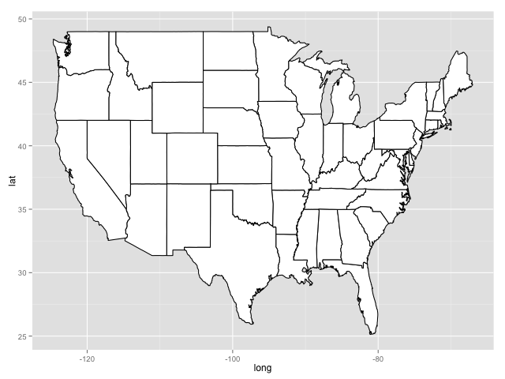
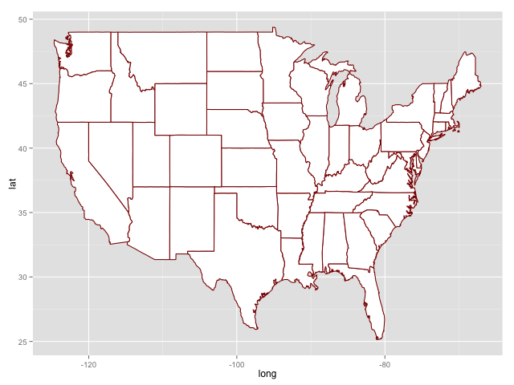
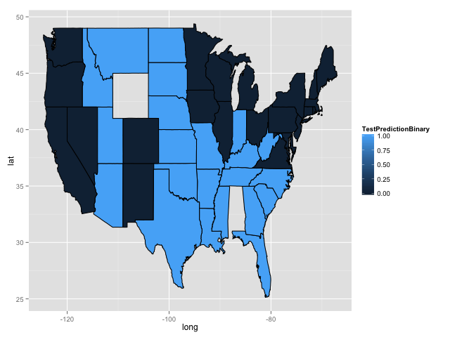

Unit 7 Assignment. Visualization
Table of Contents
- 1. Election Forecasting Revisited
- 1.1. Problem 1.1 - Drawing a Map of the US (1 point possible)
- 1.2. Problem 1.2 - Drawing a Map of the US (1 point possible)
- 1.3. Problem 2.1 - Coloring the States by Predictions (2 points possible)
- 1.4. Problem 2.2 - Coloring the States by Predictions (2 points possible)
- 1.5. Problem 2.3 - Coloring the States by Predictions (1 point possible)
- 1.6. Problem 2.4 - Coloring the States by Predictions (1 point possible)
Unit 7 Visualization assignment of The Analytical Edge course from MIT.
1 Election Forecasting Revisited
In the recitation from Unit 3, we used logistic regression on polling data in order to construct US presidential election predictions. We separated our data into a training set, containing data from 2004 and 2008 polls, and a test set, containing the data from 2012 polls. We then proceeded to develop a logistic regression model to forecast the 2012 US presidential election.
In this homework problem, we'll revisit our logistic regression model from Unit 3, and learn how to plot the output on a map of the United States. Unlike what we did in the Crime lecture, this time we'll be plotting predictions rather than data!
First, load the ggplot2, maps, and ggmap packages using the
library function. All three packages should be installed on your
computer from lecture, but if not, you may need to install them too
using the install.packages function.
writeLines("\n :: Loading the necessary libraries...") library(ggplot2) library(maps) library(ggmap)
:: Loading the necessary libraries...
Google Maps API Terms of Service: http://developers.google.com/maps/terms.
Please cite ggmap if you use it: see citation('ggmap') for details.
Then, load the US map and save it to the variable statesMap, like we did during the Crime lecture:
statesMap = map_data("state")
writeLines("\n :: Load the US map in R...") statesMap <- map_data("state")
:: Load the US map in R...
The maps package contains other built-in maps, including a US county map, a world map, and maps for France and Italy.
1.1 Problem 1.1 - Drawing a Map of the US (1 point possible)
If you look at the structure of the statesMap data frame using the str
function, you should see that there are 6 variables. One of the
variables, group, defines the different shapes or polygons on the
map. Sometimes a state may have multiple groups, for example, if it
includes islands.
writeLines("\n :: Showing the structure of stateMap:")
str(statesMap)
:: Showing the structure of stateMap: 'data.frame': 15537 obs. of 6 variables: $ long : num -87.5 -87.5 -87.5 -87.5 -87.6 ... $ lat : num 30.4 30.4 30.4 30.3 30.3 ... $ group : num 1 1 1 1 1 1 1 1 1 1 ... $ order : int 1 2 3 4 5 6 7 8 9 10 ... $ region : chr "alabama" "alabama" "alabama" "alabama" ... $ subregion: chr NA NA NA NA ...
1.1.1 Question
How many different groups are there?
writeLines("\n :: The number of groups:") str(factor(statesMap$group)) writeLines("\n :: Another useful way:") table(statesMap$group) writeLines("\n :: Yet another way to calculate:") length(table(statesMap$group))
:: The number of groups: Factor w/ 63 levels "1","2","3","4",..: 1 1 1 1 1 1 1 1 1 1 ... :: Another useful way: 1 2 3 4 5 6 7 8 9 10 11 12 13 14 15 16 202 149 312 516 79 91 94 10 872 381 233 329 257 256 113 397 17 18 19 20 21 22 23 24 25 26 27 28 29 30 31 32 650 399 566 36 220 30 460 370 373 382 315 238 208 70 125 205 33 34 35 36 37 38 39 40 41 42 43 44 45 46 47 48 78 16 290 21 168 37 733 12 105 238 284 236 172 66 304 166 49 50 51 52 53 54 55 56 57 58 59 60 61 62 63 289 1088 59 129 96 15 623 17 17 19 44 448 373 388 68 :: Yet another way to calculate: [1] 63
1.1.1.1 Answer
63
Explanation
You can count the number of different values of the group variable by
using the command table(statesMap$group). There are \(63\) different
values.
Alternatively, you could use the command
length(table(statesMap$group))
as a shortcut to counting the number of groups in the table output.
The variable order defines the order to connect the points within
each group, and the variable region gives the name of the state.
1.2 Problem 1.2 - Drawing a Map of the US (1 point possible)
You can draw a map of the United States by typing the following in your R console:

Figure 1: United States map in R
We specified two colors in geom_polygon – fill and color. Which
one defined the color of the outline of the states?
1.2.1 Answer
[ ]fill[X]color color - correct[ ]Neither
Explanation
In our plot, the states are outlined in black, which is the color we
specified for the option color. To confirm that this is changing the
outline color of the states, you can try re-running the command with a
different color:

Figure 2: United States map in other outline color
1.3 Problem 2.1 - Coloring the States by Predictions (2 points possible)
Now, let's color the map of the US according to our 2012 US
presidential election predictions from the Unit 3 Recitation. We'll
rebuild the model here, using the dataset PollingImputed.csv. Be sure
to use this file so that you don't have to redo the imputation to fill
in the missing values, like we did in the Unit 3 Recitation.
library(parallel) if(!file.exists("../data")) { dir.create("../data") } fileUrl <- "https://courses.edx.org/asset-v1:MITx+15.071x_2a+2T2015+type@asset+block/PollingImputed.csv" fileName <- "PollingImputed.csv" dataPath <- "../data" filePath <- paste(dataPath, fileName, sep = "/") if(!file.exists(filePath)) { download.file(fileUrl, destfile = filePath, method = "curl") } writeLines("\n :: File downloaded...")
:: File downloaded...
Load the data using the read.csv function, and call it polling. Then
split the data using the subset function into a training set called
Train that has observations from 2004 and 2008, and a testing set
called Test that has observations from 2012.
writeLines(" Loading the imputed data into their data frame.") polling <- read.table("../data/PollingImputed.csv", sep = ",", header = TRUE) str(polling) table(polling$Year) summary(polling)
Loading the imputed data into their data frame.
'data.frame': 145 obs. of 7 variables:
$ State : Factor w/ 50 levels "Alabama","Alaska",..: 1 1 2 2 3 3 3 4 4 4 ...
$ Year : int 2004 2008 2004 2008 2004 2008 2012 2004 2008 2012 ...
$ Rasmussen : int 11 21 19 16 5 5 8 7 10 13 ...
$ SurveyUSA : int 18 25 21 18 15 3 5 5 7 21 ...
$ DiffCount : int 5 5 1 6 8 9 4 8 5 2 ...
$ PropR : num 1 1 1 1 1 ...
$ Republican: int 1 1 1 1 1 1 1 1 1 1 ...
2004 2008 2012
50 50 45
State Year Rasmussen SurveyUSA
Arizona : 3 Min. :2004 Min. :-41.000 Min. :-33.000
Arkansas : 3 1st Qu.:2004 1st Qu.:-10.000 1st Qu.:-11.000
California : 3 Median :2008 Median : 3.000 Median : 1.000
Colorado : 3 Mean :2008 Mean : 2.048 Mean : 1.359
Connecticut: 3 3rd Qu.:2012 3rd Qu.: 12.000 3rd Qu.: 16.000
Florida : 3 Max. :2012 Max. : 39.000 Max. : 30.000
(Other) :127
DiffCount PropR Republican
Min. :-19.000 Min. :0.0000 Min. :0.0000
1st Qu.: -6.000 1st Qu.:0.0000 1st Qu.:0.0000
Median : 1.000 Median :0.6250 Median :1.0000
Mean : -1.269 Mean :0.5259 Mean :0.5103
3rd Qu.: 4.000 3rd Qu.:1.0000 3rd Qu.:1.0000
Max. : 11.000 Max. :1.0000 Max. :1.0000
Splitting the dataset in two data frames Train and Test data frames.
writeLines("\n :: Subset data into training set and test set") Train <- subset(polling, Year == 2004 | Year == 2008) Test <- subset(polling, Year == 2012)
:: Subset data into training set and test set
Note that we only have 45 states in our testing set, since we are missing observations for Alaska, Delaware, Alabama, Wyoming, and Vermont, so these states will not appear colored in our map.
writeLines("\n :: Revising the Testing data frame structure:")
str(Test)
:: Revising the Testing data frame structure: 'data.frame': 45 obs. of 7 variables: $ State : Factor w/ 50 levels "Alabama","Alaska",..: 3 4 5 6 7 9 10 11 12 13 ... $ Year : int 2012 2012 2012 2012 2012 2012 2012 2012 2012 2012 ... $ Rasmussen : int 8 13 -12 3 -7 2 5 -22 31 -22 ... $ SurveyUSA : int 5 21 -14 -2 -13 0 8 -24 24 -16 ... $ DiffCount : int 4 2 -6 -5 -8 6 4 -2 1 -5 ... $ PropR : num 0.833 1 0 0.308 0 ... $ Republican: int 1 1 0 0 0 0 1 0 1 0 ...
Then, create a logistic regression model and make predictions on the test set using the following commands:
writeLines("\n :: Creating the Logistic Regression model...") mod2 <- glm(Republican ~ SurveyUSA + DiffCount, data = Train, family = "binomial") writeLines("\n :: Making preditions from Testing data set...") TestPrediction <- predict(mod2, newdata = Test, type = "response")
:: Creating the Logistic Regression model... :: Making preditions from Testing data set...
TestPrediction gives the predicted probabilities for each state, but
let's also create a vector of Republican/Democrat predictions by using
the following command:
writeLines("\n :: Creting binary preditions with a threshold of 50%...") TestPredictionBinary <- as.numeric(TestPrediction > 0.5)
:: Creting binary preditions with a threshold of 50%...
Now, put the predictions and state labels in a data.frame so that we
can use ggplot:
writeLines("\n :: New data frame for plotting purposes...") predictionDataFrame <- data.frame(TestPrediction, TestPredictionBinary, Test$State)
:: New data frame for plotting purposes...
To make sure everything went smoothly, answer the following questions.
1.3.1 Question a
For how many states is our binary prediction 1 (for 2012), corresponding to Republican?
writeLines("\n :: Number of states with TestPredictionbinary == 1:")
nrow(subset(predictionDataFrame, predictionDataFrame$TestPredictionBinary == 1))
:: Number of states with TestPredictionbinary == 1: [1] 22
1.3.1.1 Answer
22
1.3.2 Question
What is the average predicted probability of our model (on the Test set, for 2012)?
writeLines("\n :: The average predicted probability of our model:")
mean(predictionDataFrame$TestPrediction)
:: The average predicted probability of our model: [1] 0.4852626
1.3.2.1 Answer
0.4852626
Explanation
You can create the data frame predictionDataFrame by running the following lines of R code:
polling = read.csv("PollingImputed.csv")
Train = subset(polling, Year < 2012)
Test = subset(polling, Year == 2012)
mod2 = glm(Republican~SurveyUSA+DiffCount, data=Train, family="binomial")
TestPrediction = predict(mod2, newdata=Test, type="response")
TestPredictionBinary = as.numeric(TestPrediction > 0.5)~
predictionDataFrame = data.frame(TestPrediction, TestPredictionBinary, Test$State)
You can answer the two questions with the functions
table(TestPredictionBinary) and mean(TestPrediction).
1.4 Problem 2.2 - Coloring the States by Predictions (2 points possible)
Now, we need to merge predictionDataFrame with the map data
statesMap, like we did in lecture. Before doing so, we need to
convert the Test.State variable to lowercase, so that it matches the
region variable in statesMap. Do this by typing the following in your
R console:
writeLines("\n :: convert the Test.State variable to lowercase...") predictionDataFrame$region <- tolower(predictionDataFrame$Test.State)
:: convert the Test.State variable to lowercase...
Now, merge the two data frames using the following command:
writeLines("\n :: Merging the two data frames...") predictionMap <- merge(statesMap, predictionDataFrame, by = "region")
:: Merging the two data frames...
Lastly, we need to make sure the observations are in order so that the map is drawn properly, by typing the following:
writeLines("\n :: Ordering the map data...") predictionMap <- predictionMap[order(predictionMap$order),]
:: Ordering the map data...
1.4.1 Question
How many observations are there in predictionMap?
1.4.1.1 Answer
writeLines("\n :: Number of observations in the predition map:")
nrow(predictionMap)
:: Number of observations in the predition map: [1] 15034
1.4.2 Question
How many observations are there in statesMap?
1.4.2.1 Answer
writeLines("\n :: Number of observations in the states map:")
nrow(statesMap)
:: Number of observations in the states map: [1] 15537
Explanation
If you type str(predictionMap), you should see that there are \(15034\)
observations, and if you type str(statesMap) you should see that there
are \(15537\) observations.
1.5 Problem 2.3 - Coloring the States by Predictions (1 point possible)
When we merged the data in the previous problem, it caused the number of observations to change. Why? Check out the help page for merge by typing ?merge to help you answer this question.
1.5.1 Answer
[ ]Merging the data just combines the two data frames like it would if we used rbind, so the number of observations increased.[ ]We have more observations for each state now, because some observations have the statesMap data, and some observations have the prediction data.[X]Because we only make predictions for 45 states, we no longer have observations for some of the states. These observations were removed in the merging process.[ ]We merged the observations for which our predictions are identical.
Explanation
When we merge data, it only merged the observations that exist in both
data sets. So since we are merging based on the region variable, we
will lose all observations that have a value of region that doesn't
exist in both data frames.
You can change this default behavior by using the all.x and all.y
arguments of the merge function. For more information, look at the
help page for the merge function by typing ?merge in your R console.
1.6 Problem 2.4 - Coloring the States by Predictions (1 point possible)
Now we are ready to color the US map with our predictions! You can color the states according to our binary predictions by typing the following in your R console:

Figure 3: US Presidential predictions map v1
The states appear light blue and dark blue in this map. Which color represents a Republican prediction?
1.6.1 Answer
[X]Light blue[ ]Dark blue
Explanation
Our logistic regression model assigned \(1\) to Republican and \(0\) to Democrat. As we can see from the legend, \(1\) corresponds to a light blue color on the map and \(0\) corresponds to a dark blue color on the map.